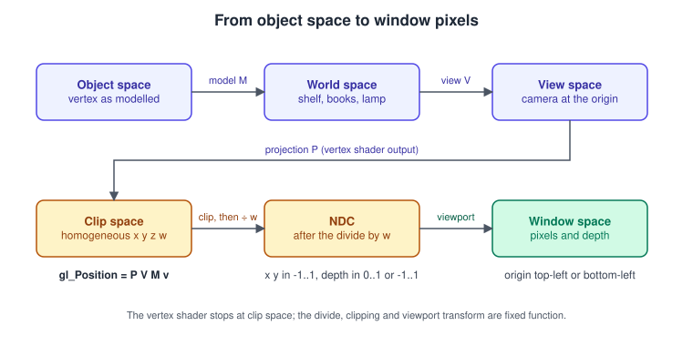
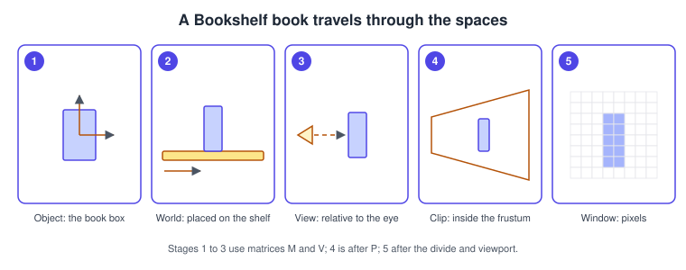
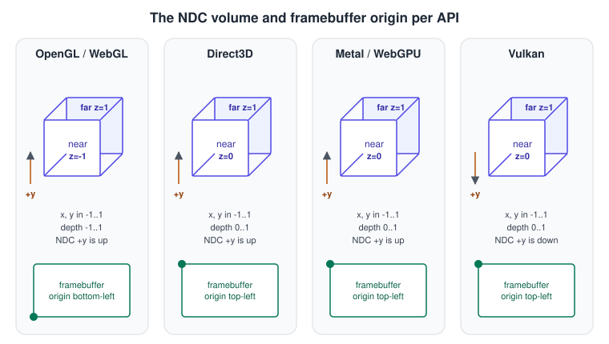
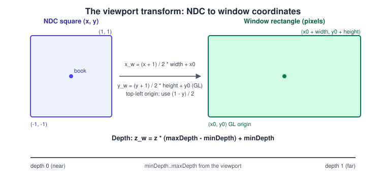
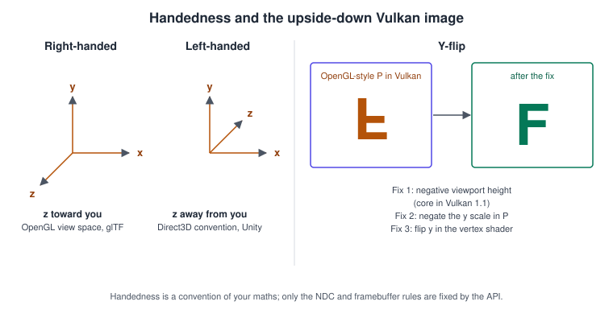

Coordinate Spaces and Transforms
|
This content was generated with the assistance of AI and should be verified against the official documentation before being relied on in production. |
Every vertex that reaches the screen has travelled through a chain of coordinate systems. Most "my model is invisible, mirrored, upside down or behind the camera" bugs are a mistake somewhere in that chain: a matrix in the wrong order, a depth range that the API does not use, a Y axis that points the other way. This page names each space, shows the matrix that leads to the next one, and lists the conventions that differ between OpenGL, WebGL, Direct3D, Vulkan, Metal and WebGPU.
The facts were checked in November 2026. They apply to OpenGL 4.6, OpenGL ES 3.2 and WebGL 2, Vulkan 1.4, the Metal API on current Apple platforms, WebGPU (W3C Candidate Recommendation Draft of 2026-09-15) and, for context, Direct3D 12 and glTF 2.0. Nothing here needs a particular GPU; the code examples are plain C, GLSL, WGSL, JavaScript and Swift. The matrix notation is explained in Vectors, Matrices and Homogeneous Coordinates; read it first if \(4 \times 4\) matrices and the divide by \(w\) are new to you.
The chain at a glance
A vertex position is stored once, in the model’s own space. The vertex shader multiplies it by three matrices, producing clip coordinates. Fixed-function hardware then clips, divides by \(w\) and maps the result to the framebuffer.

The whole chain for one vertex \(\mathbf{v}\) in homogeneous coordinates is:
\[ \mathbf{p}_{clip} = P \, V \, M \, \mathbf{v}, \qquad \mathbf{p}_{ndc} = \frac{1}{w_{clip}} \begin{pmatrix} x_{clip} \\ y_{clip} \\ z_{clip} \end{pmatrix} \]
The model matrix \(M\) maps object space to world space, the view matrix \(V\) maps world space to view (eye or camera) space, and the projection matrix \(P\) maps view space to clip space. The matrices are applied right to left when you use column vectors, which is the convention of OpenGL, Vulkan, glTF, Metal’s shading language and WGSL, and of this page. Direct3D and DirectXMath code often use row vectors, which reverses the multiplication order and transposes every matrix.

The storyboard follows one book of the Bookshelf scene. Panel 1: the book is modelled as a box around its own origin, wherever the artist put that origin. Panel 2: the model matrix places it upright on a shelf board in the world. Panel 3: the view matrix re-expresses everything relative to the camera, so that the eye is at the origin looking down the view direction. Panel 4: the projection matrix makes distant things smaller and defines the visible volume. Panel 5: after the divide and the viewport transform, the book covers a few pixels.
Object space (local or model space)
Object space is the coordinate system in which a mesh is authored. The vertex buffer stores positions relative to a pivot chosen by the artist: the centre of a book, the bottom corner of a shelf board, the foot of a character. The same mesh can then be drawn many times with different transforms. In the Bookshelf, all nine books share one book mesh; only their node transforms differ.
Besides positions, a mesh has other local frames: normals and tangents live in object space, and normal-map normals live in tangent space, a per-vertex frame whose axes follow the \(u\) and \(v\) texture directions and the surface normal. Texture coordinates have their own space, \((u, v)\) in the unit square, which is not a 3D space but behaves like one when you flip or scale it.
World space and the model matrix
World space is the shared coordinate system of the scene: the shelf, the books, the lamp and the camera all have positions in it. The model matrix places an object, and is usually built as
\[ M = T \, R \, S \]
with \(S\) a scale, \(R\) a rotation and \(T\) a translation. The order matters: with column vectors the rightmost matrix is applied first, so the object is scaled, then rotated about its own origin, then moved. Reversing the order rotates the translation, a classic bug that makes an object orbit the world origin instead of spinning in place.
Scenes are hierarchical. A glTF file stores each node with either a 4x4 matrix or separate translation, rotation (a quaternion) and scale, and a node’s world matrix is the product of its parent’s world matrix and its own local matrix:
\[ M_{world}(n) = M_{world}(parent(n)) \, M_{local}(n) \]
That is how a book moves with its shelf: its local matrix is relative to the shelf. The shared bookshelf.glb uses the same idea one level up: the Shelf node and the nine book nodes are children of a root node, Bookshelf, so moving the root moves them all. glTF uses a right-handed system with +Y up, and the front of an asset faces +Z; one unit is one metre.
Normals transform differently. A non-uniform scale makes the surface normal no longer perpendicular to the surface if you simply multiply it by \(M\). The correct matrix is the inverse transpose of the upper-left \(3 \times 3\) block of \(M\):
\[ N = \left( M_{3 \times 3}^{-1} \right)^{T} \]
For rotations and uniform scales (after renormalising) \(M_{3 \times 3}\) works, but the inverse transpose is always right. Compute it once per object on the CPU, not per vertex.
View space and the view matrix
View space (also called eye or camera space) puts the camera at the origin. By the OpenGL convention the camera looks down the negative Z axis, with +X to the right and +Y up. The view matrix is the inverse of the camera’s own world matrix: if the camera is a node placed in the scene, \(V = M_{camera}^{-1}\). Building \(V\) from "an eye position, a target and an up direction" is the look-at construction, which builds an orthonormal basis from the forward vector and the up hint:
// Right-handed look-at matrix, column-major (WebGL, WebGPU, glTF style).
function lookAt(eye, target, up) {
const sub = (a, b) => [a[0] - b[0], a[1] - b[1], a[2] - b[2]];
const dot = (a, b) => a[0] * b[0] + a[1] * b[1] + a[2] * b[2];
const cross = (a, b) => [
a[1] * b[2] - a[2] * b[1],
a[2] * b[0] - a[0] * b[2],
a[0] * b[1] - a[1] * b[0],
];
const norm = (a) => {
const l = Math.hypot(a[0], a[1], a[2]);
return [a[0] / l, a[1] / l, a[2] / l];
};
const f = norm(sub(target, eye)); // forward
const s = norm(cross(f, up)); // right
const u = cross(s, f); // true up
return new Float32Array([
s[0], u[0], -f[0], 0,
s[1], u[1], -f[1], 0,
s[2], u[2], -f[2], 0,
-dot(s, eye), -dot(u, eye), dot(f, eye), 1,
]);
}
const view = lookAt([0, 1.4, 3], [0, 1.0, 0], [0, 1, 0]); // look at the shelfSource: OpenGL 2.1 reference: gluLookAt.
A common mistake is to build the camera matrix and forget to invert it; the scene then moves the wrong way when you move the camera. Another is an up vector parallel to the view direction (looking straight down), which makes the cross product zero and the basis degenerate. For first-person cameras keep yaw and pitch as separate angles, or use quaternions as described in Rotations and Quaternions.
Clip space and the projection matrix
The projection matrix maps view space into clip space, a four-dimensional homogeneous space. A point is inside the visible volume when
\[ -w \le x \le w, \qquad -w \le y \le w, \qquad z_{min} \, w \le z \le w \]
with \(z_{min} = -1\) in OpenGL and WebGL, and \(z_{min} = 0\) in Direct3D, Vulkan, Metal and WebGPU. Clipping happens in clip space, before the divide: triangles that straddle a plane are cut, and the hardware adds new vertices. Real GPUs add a guard band so that triangles partly outside the screen but within a larger rectangle are rasterised without clipping, then trimmed by the scissor; you do not see this, but it explains why extremely large triangles are cheaper than they look.
A perspective projection with vertical field of view \(\theta\), aspect ratio \(a\) (width over height), near plane \(n\) and far plane \(f\), for a right-handed view space looking down -Z, is, for the OpenGL clip range -1 to 1:
\[ P_{GL} = \begin{pmatrix} \frac{1}{a \tan(\theta/2)} & 0 & 0 & 0 \\ 0 & \frac{1}{\tan(\theta/2)} & 0 & 0 \\ 0 & 0 & \frac{f + n}{n - f} & \frac{2 f n}{n - f} \\ 0 & 0 & -1 & 0 \end{pmatrix} \]
and for the 0 to 1 range of Direct3D, Vulkan, Metal and WebGPU, with the same view space:
\[ P_{ZO} = \begin{pmatrix} \frac{1}{a \tan(\theta/2)} & 0 & 0 & 0 \\ 0 & \frac{1}{\tan(\theta/2)} & 0 & 0 \\ 0 & 0 & \frac{f}{n - f} & \frac{f n}{n - f} \\ 0 & 0 & -1 & 0 \end{pmatrix} \]
The fourth row copies \(-z_{view}\) into \(w\), which is what makes distant objects smaller after the divide. An orthographic projection has the fourth row \((0, 0, 0, 1)\), so \(w\) stays 1 and there is no foreshortening; it is used for shadow maps from a directional light, user interfaces and CAD views. The frustum, the divide, the precision implications and the reversed-Z variant are covered in Vectors, Matrices and Homogeneous Coordinates.
#include <math.h>
#include <string.h>
/* Column-major 4x4 (index = column * 4 + row), right-handed view space (-Z forward). */
/* OpenGL / WebGL: clip depth -1..1 */
void perspective_gl(float m[16], float fovy, float aspect, float n, float f)
{
float t = 1.0f / tanf(fovy * 0.5f);
memset(m, 0, 16 * sizeof(float));
m[0] = t / aspect;
m[5] = t;
m[10] = (f + n) / (n - f);
m[11] = -1.0f;
m[14] = 2.0f * f * n / (n - f);
}
/* Direct3D / Vulkan / Metal / WebGPU: clip depth 0..1 */
void perspective_zo(float m[16], float fovy, float aspect, float n, float f)
{
float t = 1.0f / tanf(fovy * 0.5f);
memset(m, 0, 16 * sizeof(float));
m[0] = t / aspect;
m[5] = t;
m[10] = f / (n - f);
m[11] = -1.0f;
m[14] = f * n / (n - f);
}
/* Vulkan with a conventional viewport: negate the Y scale instead of flipping the viewport. */
void perspective_vulkan(float m[16], float fovy, float aspect, float n, float f)
{
perspective_zo(m, fovy, aspect, n, f);
m[5] = -m[5];
}Source: OpenGL 2.1 reference: gluPerspective for the OpenGL matrix, and Vulkan specification: Controlling the viewport for the 0 to 1 depth range.
A GLSL vertex shader that applies the chain, including the normal matrix, is short:
#version 460 core
layout(location = 0) in vec3 aPos;
layout(location = 1) in vec3 aNormal;
uniform mat4 uModel;
uniform mat4 uView;
uniform mat4 uProj;
uniform mat3 uNormalMatrix; // inverse transpose of the upper 3x3 of uModel
out vec3 vWorldPos;
out vec3 vNormal;
void main()
{
vec4 world = uModel * vec4(aPos, 1.0);
vWorldPos = world.xyz;
vNormal = normalize(uNormalMatrix * aNormal);
gl_Position = uProj * uView * world; // clip space; the hardware does the rest
}NDC: the normalised device cube
After clipping, the hardware divides \(x\), \(y\) and \(z\) by \(w\) (the perspective divide), giving normalised device coordinates (NDC). All visible points lie in a box: \(x\) and \(y\) in the range -1 to 1 in every API, and depth in -1 to 1 for OpenGL and 0 to 1 for the others. The orientation of the Y axis and the origin of the framebuffer differ too.

| API | NDC depth | NDC +Y points | Framebuffer origin | Typical view-space convention |
|---|---|---|---|---|
OpenGL, OpenGL ES, WebGL |
-1 to 1 (0 to 1 with |
up |
bottom-left |
right-handed, camera looks down -Z |
Direct3D 11 and 12 |
0 to 1 |
up |
top-left |
left-handed, camera looks down +Z (by convention of the math libraries) |
Metal |
0 to 1 |
up |
top-left |
your choice |
WebGPU |
0 to 1 |
up |
top-left |
your choice |
Vulkan |
0 to 1 |
down |
top-left |
your choice |
Three consequences follow:
-
Depth. A projection matrix built for one range puts depth outside 0 to 1 (or -1 to 1) in another. The clip range is a property of the API: take the matrix from a library that supports it, or write the matrix with the correct third row as above. Compare the two examples: the OpenGL form has \((f+n)/(n-f)\) and the 0 to 1 form has \(f/(n-f)\) in the same position. OpenGL 4.5 and ARB_clip_control let you switch the range to 0 to 1, which is required for reversed-Z on OpenGL; see glClipControl.
-
Y direction. The same projection matrix produces an upside-down image in Vulkan, because NDC +Y points down, as explained below.
-
The cube is the same size. Only depth differs; the visible x and y range is always -1 to 1, so aspect-ratio code does not change.
Window space and the viewport transform
The viewport transform maps NDC to window (framebuffer) coordinates. For a viewport with origin \((x_0, y_0)\), width \(W\), height \(H\) and depth range \([d_{min}, d_{max}]\), OpenGL computes
\[ x_w = x_0 + \frac{W}{2}\,(x_{ndc} + 1), \qquad y_w = y_0 + \frac{H}{2}\,(y_{ndc} + 1), \qquad z_w = d_{min} + (d_{max} - d_{min}) \, \frac{z_{ndc} + 1}{2} \]
The Direct3D, Vulkan, Metal and WebGPU form has depth already in 0 to 1, so \(z_w = d_{min} + (d_{max} - d_{min}) \, z_{ndc}\). For APIs whose framebuffer origin is at the top-left the vertical coordinate is mirrored, so that +Y up in NDC (Direct3D, Metal, WebGPU) corresponds to smaller row numbers: \(y_w = y_0 + \frac{H}{2}(1 - y_{ndc})\).

You set the viewport with glViewport and glDepthRange in OpenGL, with vkCmdSetViewport in Vulkan (which also takes minDepth and maxDepth), with setViewport and MTLViewport in Metal, and with setViewport(x, y, width, height, minDepth, maxDepth) on a WebGPU render pass. A scissor rectangle then discards fragments outside a pixel rectangle without changing the mapping. Viewport and scissor are independent: shrinking the viewport scales the image, shrinking the scissor crops it.
Common viewport mistakes:
-
Setting the viewport to the logical size in points on a high-density display, instead of the pixel size of the drawable, so the image occupies a quarter of the window. Use the framebuffer size (
glfwGetFramebufferSize, the Metal drawable size,canvas.widthtimes the device pixel ratio). -
Not updating the viewport and the projection’s aspect ratio on resize, which stretches the scene.
-
Leaving the depth range at a non-default value from an earlier pass, so a later pass draws everything on top of or behind the rest.
// Metal: viewport in pixels, depth range 0..1, origin top-left
let viewport = MTLViewport(originX: 0, originY: 0,
width: Double(drawableSize.width),
height: Double(drawableSize.height),
znear: 0.0, zfar: 1.0)
encoder.setViewport(viewport)
encoder.setScissorRect(MTLScissorRect(x: 0, y: 0,
width: Int(drawableSize.width),
height: Int(drawableSize.height)))Source: Apple: MTLViewport.
// WebGPU: x, y, width, height in pixels from the top-left; depth 0..1
pass.setViewport(0, 0, canvas.width, canvas.height, 0, 1);
pass.setScissorRect(0, 0, canvas.width, canvas.height);Source: WebGPU: Coordinate systems.
Handedness
A coordinate system is right-handed if rotating the X axis towards Y moves a right-handed screw along +Z, and left-handed otherwise. On a screen with +X to the right and +Y up, a right-handed system has +Z pointing towards the viewer, and a left-handed system has +Z pointing into the screen. Nothing in the maths prefers one; each convention is a choice that every tool in a pipeline must share.

| System | Handedness and axes | Notes |
|---|---|---|
OpenGL view space |
right-handed; +Y up, camera looks down -Z |
The API itself does not require this, but the fixed-function legacy and every GL maths library assume it. |
glTF 2.0 |
right-handed; +Y up, asset front faces +Z, units metres |
Counter-clockwise triangle winding is front-facing. |
Direct3D and DirectXMath |
left-handed by convention (RH variants exist); +Y up |
Row vectors and row-major storage are the default style. |
Unity |
left-handed; +Y up, +Z forward |
The glTF importer flips X or Z to convert. |
Unreal Engine |
left-handed; +Z up, +X forward, centimetres |
Importers rotate and scale glTF content. |
Blender |
right-handed; +Z up |
The glTF exporter converts to +Y up. |
ARKit, RealityKit, ARCore |
right-handed; +Y up |
Camera looks along -Z in view space. |
Java 3D |
right-handed; +Y up, +Z toward the viewer |
Documented in the Java 3D specification’s view model. |
Converting between handedness is a mirror. Negate one axis of the positions (and, to keep the same triangles facing outward, reverse the winding order of the triangles, or equivalently flip the culling setting). Transform matrices and quaternions mirror too: negate the corresponding row and column terms and the relevant quaternion components. The most common source of an inside-out or mirrored model after an import is a mirror applied without reversing the winding order.
The Y-flip problem
Direct3D and Metal solved Y up in NDC with a top-left origin. OpenGL has Y up in NDC with a bottom-left origin, so GL’s image rows run bottom to top. Vulkan kept the top-left origin but defined +Y in NDC as down. An OpenGL-style projection matrix drawn by Vulkan therefore appears upside down: a point with larger \(y_{ndc}\) lands on a lower row.
Three fixes are in use. All three produce the same upright image as OpenGL, so the counter-clockwise front-face convention of glTF and OpenGL stays valid with any of them:
-
Negative viewport height (
VK_KHR_maintenance1, core in Vulkan 1.1): setyto the framebuffer height andheightto its negative. The image is flipped by the viewport transform. This is the approach most often recommended for porting, andperspective_zoabove then works unchanged. -
Negate the Y scale in the projection matrix (as
perspective_vulkandoes). The matrix then carries the flip, which is convenient when the viewport is set by a framework you do not control. -
Negate
gl_Position.yin the vertex shader. Easy, but it costs a line in every shader and is easy to forget in one of them.
/* Vulkan: flip the image with a negative-height viewport (VK_KHR_maintenance1, core in 1.1). */
VkViewport viewport = {
.x = 0.0f,
.y = (float)framebufferHeight,
.width = (float)framebufferWidth,
.height = -(float)framebufferHeight,
.minDepth = 0.0f,
.maxDepth = 1.0f,
};
vkCmdSetViewport(cmd, 0, 1, &viewport);Source: Vulkan: vkCmdSetViewport.
Texture coordinates and image data have the same split. OpenGL’s \(t = 0\) is the first row of the data you upload, which most image decoders put at the top of the picture, so GL code often flips images on load. Direct3D, Metal, Vulkan, WebGPU and glTF put \((0, 0)\) at the top-left of the image. If a textured book appears vertically mirrored, either the image rows or the UV direction were flipped twice or not at all. In WebGL you can set UNPACK_FLIP_Y_WEBGL; in WebGPU copy the image bitmap with flipY: true when needed.
Putting it together: porting a scene between APIs
The practical checklist for taking the Bookshelf from OpenGL to another API:
| Item | What to change |
|---|---|
Clip depth |
Use the 0 to 1 projection for Vulkan, Metal, WebGPU and Direct3D, or call |
Y direction |
Vulkan: negative viewport height, or flip in the matrix. Metal and WebGPU: nothing for rendering, but the framebuffer origin is top-left when you read pixels or set scissor. |
Winding and culling |
Keep counter-clockwise front faces (the glTF and OpenGL default); reverse them only when you mirrored the geometry, for example when converting handedness. |
Texture origin |
Treat the top-left as \((0, 0)\) in every modern API except OpenGL’s raw upload order. |
Matrix storage |
GLSL, WGSL, MSL and SPIR-V are column-major; HLSL packs matrices column-major by default in constant buffers; DirectXMath stores row-major and uses row vectors. |
Handedness |
Pick one world convention for the project. Convert at import time, not in the shaders. |
Common mistakes and performance notes
-
Multiplying matrices in the wrong order. With column vectors the chain is \(P V M \mathbf{v}\). If everything is distorted, check order and transposition first.
-
Precision. Float32 positions far from the origin lose sub-millimetre precision (a coordinate near 10000 has a spacing of about a millimetre). Large worlds use camera-relative rendering: subtract the camera position on the CPU in double precision, then upload a translation-free view matrix.
-
Per-vertex matrix products. Multiply \(P V M\) on the CPU once per object and send one matrix, rather than three matrices multiplied per vertex; modern GPUs hide it for small meshes but it wastes bandwidth and ALU on large ones. Pass the model matrix per instance when drawing many books.
-
Non-uniform scale on lit objects needs the normal matrix, or specular highlights tilt wrongly.
-
Near plane too close. The depth buffer’s precision is concentrated near the camera. Pushing the near plane from 0.01 to 0.1 often removes z-fighting entirely; see the reversed-Z discussion in the next page for the best fix.
-
Mixing spaces in lighting. Compute normals, light vectors and view vectors in the same space; world or view space are both common, but not one of each.
What changed recently
-
OpenGL 4.5 (2014) added
glClipControl, so GL can use the 0 to 1 clip range and an upper-left origin. -
Vulkan 1.1 (2018) made negative-height viewports core, which became the standard way to match OpenGL’s Y direction.
-
WebGPU fixed its conventions in the specification: NDC depth 0 to 1, +Y up in NDC and framebuffer origin at the top-left.
-
glTF 2.0 is now ISO/IEC 12113:2022, and it is the shared reference for right-handed +Y-up content.
-
Apple platforms and OpenXR use right-handed, +Y-up conventions for AR and spatial content, which matches glTF.
What the older books say, and what is outdated
Daniel Selman’s Java 3D Programming and the Java 3D API Specification introduce the same chain with scene-graph names: the transform groups on the path from a leaf to the root give the model-to-world matrix, and the view platform node plus the View object define the eye. Java 3D uses a right-handed system with +Y up and +Z toward the viewer, and, unusually, a physical view model in metres: the position of the eye, the screen and the head tracker are described in the physical world, and the projection is derived from them. That model covers head-mounted and room-mounted displays in the specification’s appendix on view model details. It is the ancestor of what OpenXR expresses today with reference spaces, views and a per-eye projection; for new work, follow the OpenXR 1.1 specification rather than the Java 3D view model. The OpenGL SuperBible and the OpenGL ES 3.0 Programming Guide teach the same matrices with glTranslate, glRotate and the matrix stack, which were removed from the OpenGL core profile and from OpenGL ES 2.0 onwards: modern code builds the matrices itself, as above, and uploads them as uniforms.
| Older approach | Current approach |
|---|---|
|
Build matrices in your own code or a library, and upload them as uniforms |
Java 3D |
Node transforms in glTF, a camera node, OpenXR spaces for head-mounted display |
Always OpenGL clip depth -1 to 1 |
Per-API clip range, chosen by the projection matrix |
For rotation matrices, quaternions and camera models, the irurueta-geometry and irurueta-algebra components of this documentation site provide matrix and quaternion operations in Java that follow the same conventions.
See also
Vectors, Matrices and Homogeneous Coordinates derives the projection matrices, explains \(w\) and the perspective divide, and covers reversed-Z. The Rendering Pipeline shows where clipping, the divide and the viewport transform sit between the shader stages and the rasteriser.
See it in
OpenGL: Coordinate Systems and Transforms in OpenGL; WebGL: Transforms and Cameras; Metal: Transforms and Camera; Vulkan: The Vulkan Graphics Pipeline; Unity: GameObjects, Components and Transforms; Unreal Engine: Actors and Components.
References
-
Khronos, OpenGL 4.6 specification, glClipControl, glViewport and glDepthRange
-
Khronos, Vulkan specification: Controlling the viewport and vkCmdSetViewport
-
Apple, MTLViewport and the Metal Shading Language specification
-
Microsoft (context only), Direct3D: Rasterizer stage
-
Manning, Java 3D Programming (Daniel Selman, 2002) and the JogAmp Java 3D project